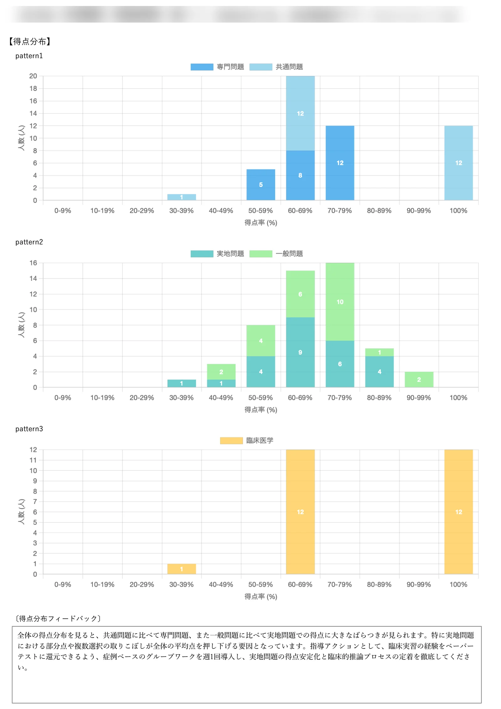
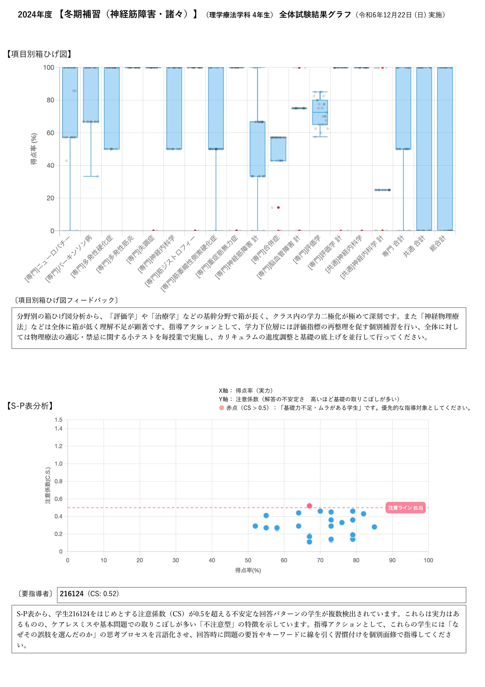
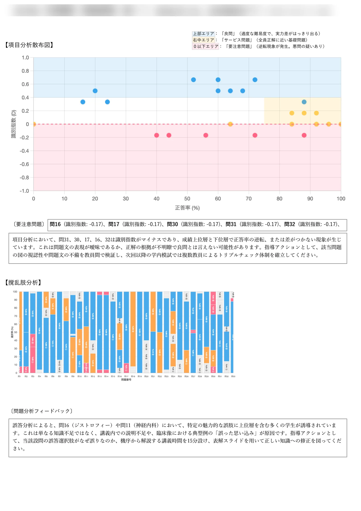
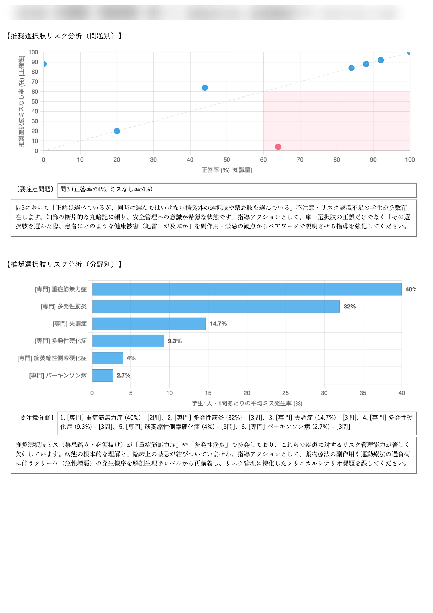
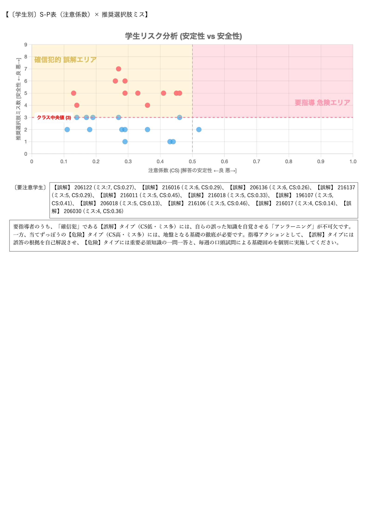
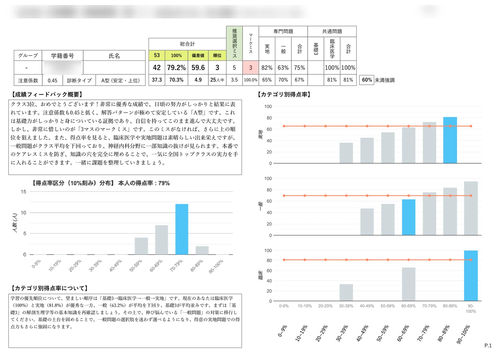
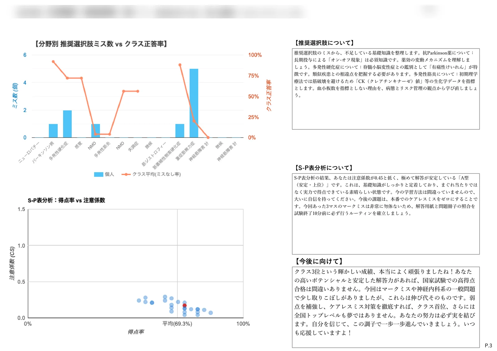
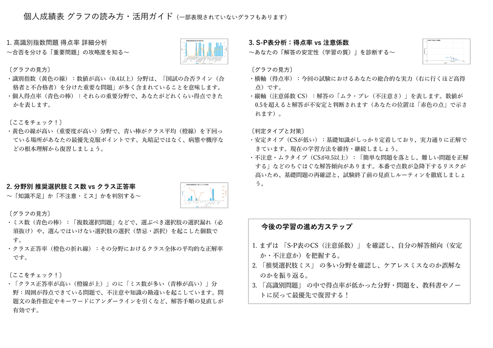

「点数」では届かない領域へ。
学習の『質』と『臨床リスク』を解き明かす特許技術
単なる〇×採点では見抜けない「まぐれ当たり」「禁忌肢の選択」「集団的誤解」を科学的に可視化。
教員向け【全体試験結果レポート】と学生向け【個人成績表レポート】の2大帳票による徹底解説をお届けします。
なぜ従来の模試システムでは「真の実力」が見えないのか？
国家試験の模擬試験では、「何点取れたか（得点率）」ばかりに注目が集まります。
しかし、医療系国家試験において最も危険なのは、「合格圏の点数を取っているのに、臨床上極めて危険な禁忌肢を選んでいる学生」や、「まぐれ当たりで点数を取り、基礎に重大な穴がある学生」です。
学習の「質」を評価
S-P表 注意係数（C.S.）
易しい問題を落とし、難しい問題を正解する「ちぐはぐ解答」を数値化。点数の高さに隠れた基礎知識の穴やまぐれ当たりを検知します。
臨床リスクを未然に防ぐ
推奨選択肢リスク分析
「選ぶべき推奨選択肢」と「除外すべき禁忌選択肢」を設定。正答していても危険な思考回路を持つ「隠れリスク（ヒヤリハット）」を暴きます。
指導＆復習をAI言語化
LLMパーソナライズ診断
教員には「クラス全体の講評と介入優先者リスト」、学生には「病態生理まで掘り下げた個別復習アクション」を自動生成します。
教育現場のDXを具現化する、2大実例レポート
実際に医療系大学・専門学校の試験で出力された実物帳票をもとに、各分析グラフの見方と指導への活用法を以下に詳しく解説します。
指導者向け【全体試験結果レポート】詳細解説
クラス全体の学力分布、潜在的リスク、問題の妥当性、要指導学生をAIがワンストップで可視化
得点分布（ヒストグラム） ＆ 項目別箱ひげ図
集団の実力分布と、分野ごとの「学力格差・ばらつき」を即座に把握
得点分布（ヒストグラム）の見方
- 理想的な山型（中央60〜70%）: 試験の難易度が適正であることを示します。
- 二極化（フタコブラクダ型）: 成績上位層と下位層の格差が拡大。下位層への早急なテコ入れが必要です。
- 3層内訳（全体・専門・共通）: どの分野が全体の足を引っ張っているかを即座に特定します。
項目別箱ひげ図の見方
- 箱が短い（潰れている）: 全員の点数が揃っており、理解が均質（理想的）。
- 箱が長い（伸びている）: 「できる学生」と「できない学生」の差が激しい状態。全体講義だけでなく下位層への補習が急務です。

S-P表分析（注意係数散布図：学習の質）
単なる点数ではなく、「解答パターンの安定性・ムラ」を科学的に評価
教育工学の理論「S-P表（Student-Problem Chart）」を応用し、学生一人ひとりの解答データから注意係数（Caution Index: C.S.）を自動算出します。
軸の意味
・X軸（得点率）: 今回の実力（右に行くほど高得点）
・Y軸（注意係数 C.S.）: 解答のムラ（上に行くほど簡単な問題を落とし、難問を当てる不安定さ）
赤点エリア（C.S. > 0.5）：要注意学生の特定
一見合格圏に見えても、基礎に重大な穴があり「まぐれ当たり」が多い学生です。本番で出題傾向が変わると点数が急落するリスクが極めて高いため、AIが自動で学生番号を抽出し、個別指導を促します。

撹乱肢（誤答）分析 ＆ 項目分析散布図
「良問」「サービス問題」「悪問・没問」の判定と、クラス共通の誤解を発見
項目分析散布図（正答率 × 識別指数）
- 良問エリア（上部）: 適度な難易度で、成績上位と下位の実力差がはっきり出ている問題。
- サービス問題（右中）: ほぼ全員が正解できている基礎定着確認問題。
- 要注意問題（識別指数 0以下）: 上位層よりも下位層の正答率が高い「逆転現象」が発生。問題文の不備・解答割れが疑われ、採点除外（没問）の検討を自動推奨します（P.4リスト化）。
撹乱肢（誤答）の集中検知（P.5）
正答率が低く、かつ特定の誤答選択肢に40%以上集中している場合、強力な撹乱要因（★警告マーク）として赤太字表示。「なぜ学生たちがその選択肢に引っ張られたのか」という思考の盲点を特定できます。

推奨選択肢リスク分析（問題別・分野別）
正解していても禁忌肢を踏んでいる「ヒヤリハット問題」と弱点分野を特定
「単一の〇×」では見えない、必須選択肢の見落とし（必須抜け）や選んではいけない禁忌肢の選択を各問題・各疾患分野ごとにマッピングします。
「隠れリスク問題（ヒヤリハット）」の検知例
例えば問3（正答率: 64%, ミスなし率: 4%）：正答率は6割を超えているにもかかわらず、96%の学生が推奨外の選択肢や禁忌肢を同時に選んでいます。 「知識はあるが安全管理が不注意」な状態を早期に察知し、医療事故を防止する指導につなげます。
要注意分野のランキング化
「重症筋無力症（ミス率40%）」「多発性筋炎（ミス率32%）」など、リスク管理能力が欠如している疾患を自動抽出し、解剖生理・病態生理からの再講義を提案します。

〔学生別〕S-P表（注意係数）× 推奨選択肢ミス
知識の安定性と臨床の安全性を掛け合わせた「4象限マトリクス」診断
縦軸に「推奨選択肢ミス数（臨床判断の危険度）」、横軸に「S-P表 注意係数（知識のムラ）」を配置し、学生を4つの思考タイプに分類。タイプに応じた指導アクションを自動決定します。
CS低・ミス多。知識はブレないが根本的に間違った解釈をしている。自分の誤答根拠を説明させる「アンラーニング」が必須。
CS高・ミス多。知識もムラだらけで判断も危険。一問一答や毎週の口頭試問による徹底的な基礎固めを実施。
CS高・ミス少。知識はあるがケアレスミスが多い。試験終了前の見直しルーティン指導で大幅得点UPが可能。
CS低・ミス少。知識が深く定着し臨床判断も正確。応用問題や他科目の発展学習へ進む。

学生向け【個人成績表レポート】詳細解説
学生が「自分の弱点」を納得し、自律的に復習できるパーソナライズ診断シート
多面的スコアカード ＆ 分野別レーダーチャート
点数・偏差値に加え、マークミス数・推奨選択肢ミス数まで可視化
総合得点や学内順位、偏差値だけでなく、「マークミス数」や「推奨選択肢ミス数」をトップに大きく配置。
分野別バランス（8角形レーダーチャート）
専門（実地・一般）、共通（基礎・臨床）のバランスを一目で確認。特定の苦手科目が全体の足を引っ張っていないかを視覚的に把握できます。
60%未満強調バー表示
国家試験合格のボーダーラインとなる「60%」を下回った項目は赤色で警告強調され、学生自身がどこを補強すべきか直感的に理解できます。

LLMパーソナライズ・アドバイス（AI個別診断）
AIが学生の解答傾向を読み取り、病態生理からの復習法と励ましを文章化
教員が何十人もの学生に対して個別コメントを手書きする必要はありません。最新の生成AI（Gemini API）が、試験データから学生一人ひとりに最適化されたパーソナル指導文章を瞬時に生成します。
病態生理レベルの復習指示（P.2）
「パーキンソン病の黒質線条体路ドパミン減少」「多発性筋炎でのCK値の推移」など、なぜ間違えたのかを基礎医学レベルから言語化して解説。
推奨選択肢・臨床リスクの学び直し（P.3）
抗Parkinson薬の「オン-オフ現象」や、多発性筋炎でのリスク管理など、踏んではいけない臨床地雷の背景を振り返らせます。
S-P表分析診断 ＆ 温かいエール
「あなたは注意係数0.45のA型（安定・上位）です。今の学習法で間違いありません！」といった客観的診断と、学生を勇気づける温かいメッセージでモチベーションを向上させます。

個人解答明細表 ＆ 活用ガイド（3つの学習ステップ）
全問題の選択状況、識別指数、推奨選択肢ミスを完全透明化
全問の解答プロセスを可視化（P.4）
各問題の正解・不正解（青・赤）に加え、「誤答最多肢（多数派のひっかけ）」、学生自身の選択番号、識別指数、必須・選除の判定結果が一目でわかります。
学生のための今後の進め方 3ステップ（P.5）
- S-P表のCS（注意係数）を確認: 自分の解答傾向が「実力安定型」か「不注意・ムラ型」かを把握する。
- 「推奨選択肢ミス」の多い分野を確認: ケアレスミスなのか、根本的な知識の誤解（アンラーニングが必要）かを振り返る。
- 「高識別問題」の低得点分野を最優先復習: 合否の分かれ目となった重要問題を教科書・ノートに戻って徹底マスターする！

従来の模試集計と特許システムの決定的な違い
点数だけの表面的な対策から、本質的な臨床安全教育へ
| 比較項目 | 従来の一般的な模試システム | INTEVE SCHOOL（特許出願システム） |
|---|---|---|
| 合否・実力判定 | 点数・正答率・順位のみ | 点数に加え、S-P表注意係数（解答のムラ）と識別指数で学習の質を判定 |
| 禁忌肢・臨床リスク | 判定不能（正解していれば〇） | 推奨選択肢リスク分析により、正解していても禁忌肢を踏む「隠れリスク」を検知 |
| 要指導学生の抽出 | 点数下位者を順番に並べるだけ | 4象限マトリクスにより、「確信犯的誤解者」「当てずっぽう型」等をタイプ別に自動分類 |
| 悪問・没問の発見 | 教員の手動確認が必要 | 識別指数マイナスの逆転問題を自動特定し、没問検討リストを出力 |
| 指導講評・復習指示 | 教員が手書き、または一般的な正答解説のみ | LLMが全自動生成。教員には授業改善案、学生には病態レベルの復習法を提示 |
「全員合格」と「安全な医療人育成」を、
INTEVE SCHOOL の特許技術で実現しませんか？
本システムは、医療系大学・専門学校の教員業務の劇的な効率化と、学生一人ひとりの潜在的リスクゼロ化を両立します。デモのご体験やプランのお見積もりなど、お気軽にお問い合わせください。